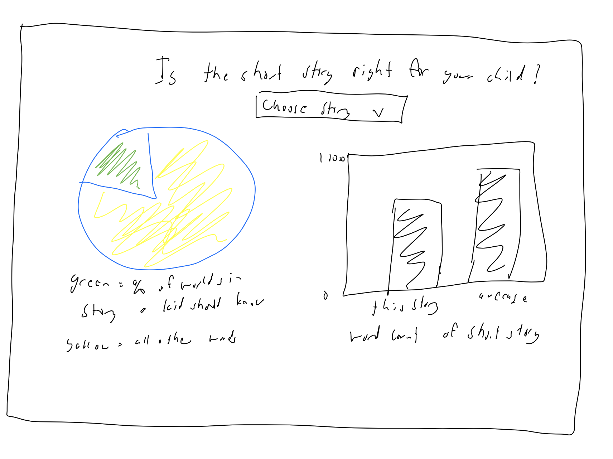
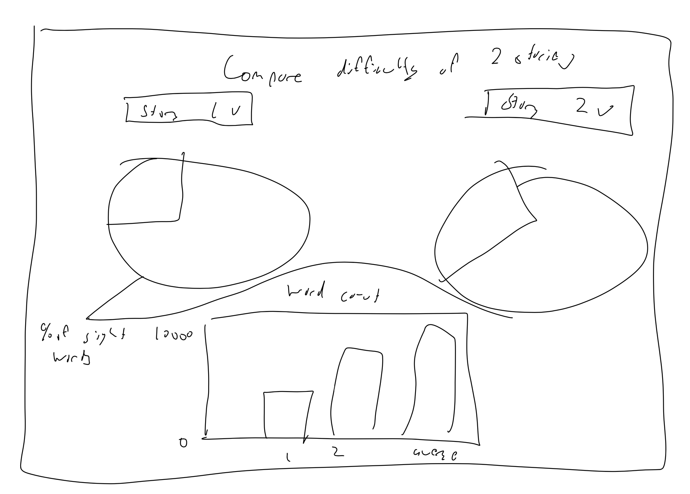

Vinay's Process Book
Part 1: Design
- What do you want to achieve with the visualization?
-
For my visualization I want to tailor it to explicate information that
will be helpful when looking to find books that are correct for the
reading age of kindergartners.
-
We all know these folk tales and short stories were made as bed time
and tall tales to appease the minds of small children. However, I want
to delve deeper into that sentiment and uncover how tailored a few of
the most common stories are.
-
After doing some research on average amount and what types of words a
kindergartner should know, I want to look at how many words go beyond
the scope of those 50-100 some words. I want to achieve the act of
deciding if these books are kid friendly or not.
-
What tasks do I want to support?
-
Firstly, I want to support the task of checking the percantage of
words in each story and how it compares to the list of words the
average kindergarter should know.
-
Secondly, I want to compare the total word count of each of the
short stories to the average length a kids story should be, to see
if each story is beyond the scope of what an average kindergartner
can understand and enjoy.
-
Lastly, I want to support the task of making these visualizations
beautiful with vibrant colors and a design that is pleasing to the
eye.
-
What designs will help me accomplish these?
-
The first design that will help is a pie chart. I know that there is
some controversy with these types of charts that we have discussed
in class, but I believe it will be helpful in determining the
percentage of words that a kindergartner should know compared to the
other words in each story.
-
The second design that will help is using a bar chart. This bar
chart will compare the total word count of the short story to the
average length of a story a child of that age should be reading.
Part 2: Sketches
Sketch 1

My sketches are rather rudimentary. however, they showcase exactly what I
want to explicate in my final design. In this design, I allow the reader
to choose a story from a drop down menu, then I have a pie chart showing
the percentage of words are commonly known by children. The chart to the
right is a bar chart showing the word count for that story compared to the
average word count of a story a child should be able to read. This is
helpful in determining if a particular short story is right for your
child.
Sketch 2

My sketches are rather rudimentary. however, they showcase exactly what I
want to explicate in my final design. In this design, I allow the reader
to choose two stories from drop down menus to compare their reading
difficulty. I have two pie chart respectively showing the percentage of
words are commonly known by children for each story. The chart to the
middle is a bar chart showing the word count for each story compared to
the average word count of a story a child should be able to read. This is
helpful in determining a comparison between the two selected stories.
Part 3: My Process
-
The first thing I wanted to do was parse and process the text files. I
knew I only wanted to support a few short stories rather than all of
them so I landed on a few of the ones that I knew and that were the most
commononly known.
-
I created seperate text files for each story I wanted to use. Then, by
using a python script to read in the file, I was able to create a new
file with the list of all the words in the file in an array like format
that can be understood by javascript.
-
I created a new javascript file that contains 6 arrays, with each array
being the list of all words in that story.
-
Then the first I did was create the UI and design the interface. I made
it simple and modern so that it was visually appealing and the colors
were not too jarring.
-
Then it was time to create the class structure. I followed the previous
guidelines and created a class based designs for the pie and bar chart.
-
Then, after hooking up event listeners, I was able to display the data
using a pie chart and a bar chart accordingly.
Part 4: Justification for final design
-
These stories are made for kids, so knowing which story might be easier
for them to read and to understand is helpful for parents choosing which
story to read to their kid
-
I ended up going with my second sketch because I watned to explain and
compare multiple stories together
-
The colors are very warm and inviting. They are not jarring to the eye
which is why I chose them.
-
The UI is very clean and simple and is very visually appealing, so that
is why it looks the way it does
-
I chose a pie chart to easily visualize percentage values, and the
colors in the chart represent green for known words, and red for unknown
words
-
The colors for the bar chart are green for less than average, red for
more than average, and orange for average
-
While simple, I believe that my design is very clean and is beautiful to
the eye. The only thing I wish I had more time to add was transitions
between the movement of the charts